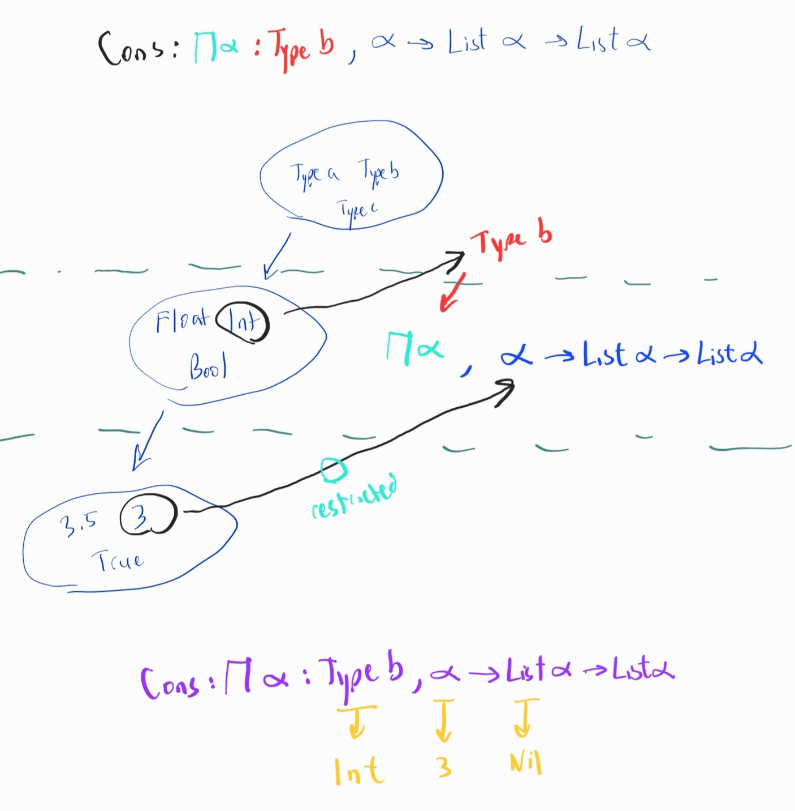

Lean 3 (archive)
| Logic | Intro | Elim |
|---|---|---|
| \(\rightarrow\) | intro intros |
apply have h_3 := h_1 h_2 |
| \(\forall\) | intro intros |
apply specialize have h_2 := h_1 t |
| \(\exists\) | use |
cases |
| \(\lnot\) | intro intros |
apply contradiction |
| \(\land\) | split |
cases h.1 h.2 h.left h.right |
| \(\leftrightarrow\) | split |
cases h.1 h.2 h.mp h.mpr rw |
| \(\lor\) | left right |
cases |
| \(\bot\) | N/A | contradiction ex_falso |
| \(\top\) | trivial |
N/A |
Classical logic open_locale classical use by_contradiction tactic
Most of the time, implication and universal quantifier are treated the same.

1 rw
- given
h: a*b=b*a
rw hmeans attempt to transform consequent usinga*b->b*a⊢a*b+cturns into⊢b*a+c
rw <- hmeansb*a->a*b⊢b*a+cturns into⊢a*b+c
1.1 Example
expected type:
abcd: ℝ
h₁: a ≤ b
h₂: c ≤ d
⊢ ∀ {α : Type u_1} {a b c d : α} [_inst_1 : preorder α]
[_inst_2 : has_add α]
[_inst_3 : covariant_class α α (function.swap has_add.add) has_le.le]
[_inst_4 : covariant_class α α has_add.add has_le.le]
, a ≤ b → c ≤ d → a + c ≤ b + dType
For any type α that has a pre order.
2 Types
if p : Prop then
x:p is a proof of proposition p : Prop.
if y:p is also a proof then proof irrelevance means x:p and y:p are indistinguishable.
- Props, terms
- Given \(P:Prop\) , the term \(h:P\) is a proof of \(P\)
- Implication \(P \rightarrow Q : Prop\) is the function type
- Given \(h1: P \rightarrow Q\) , \(h2:P\) conclude \(h1\ h2: Q\)
- Quantifier and Dependent Function type
- Given \(P:X \rightarrow Prop\) represents \(\forall( x: X). P\ x: Prop\)
3 Numbers
Proofs of numbers typically use type coercion.
norm_num4 Inductive type
inductive mynat
| zero : mynat
| succ (n : mynat) : mynat5 Definitional Equality and Reduction
- Given
- \(A \overset{reduces}{\rightarrow} X\)
- \(B \overset{reduces}{\rightarrow} X\)
- Implies
- \(A \underset{def}{\equiv} B\)
| Conversion | Definition | Example |
|---|---|---|
| alpha | renaming | \(\lambda x. P x \equiv \lambda y. P y\) |
| beta | computing | \((\lambda x. x + 2) 3 \equiv 3 + 2\) |
6 Dependent type
6.1 Inspiring the dependent type
cons 2 [3,4] : List Nat
cons : Nat -> List Nat -> List Nat
What if we wanted a polymorphic cons?
Give first argument as the Type
cons Nat 2 [3,4] : Type -> T -> List T -> List T
- Nat : Type
- 2 : T
- [3,4] : List T
Notice T = Nat
We need T in Type-Space to relate to Nat in Term-Space. How?
Abstract away the term Nat to a bound term variable Π T
Type -> T -> List T -> List T =>
Π T : Type -> T -> List T -> List T
namespace hidden
universe u
constant list : Type u → Type u
constant cons : Π α : Type u, α → list α → list α
constant nil : Π α : Type u, list α
constant head : Π α : Type u, list α → α
constant tail : Π α : Type u, list α → list α
constant append : Π α : Type u, list α → list α → list α
#check cons α a (nil α)
end hiddenObserve how we can use Dependent Product Type for polymorphism.
\[\prod_{x: \alpha} \beta = \prod_{x: \alpha} (x \rightarrow list\ x \rightarrow list\ x)\]
Pi-type or dependent product type behaves like lambda in the type space
β is an EXPRESSION that can be expanded.
β may or may not include bound variable x in it’s expression
cons :: Π x : α, β
What is the type of cons int?
We apply (Π x : α, β) to int in the type space.
cons int :: (Π x : α, β)(int)
(Π x : α, β)(int)- Beta-reduction:
β[int/x]
βexpanded isx -> list x -> list x
β[int/x]is(x -> list x -> list x)[int/x]
- replace x with int resulting in
(int -> list int -> list int)
cons int :: (Π x : α, β)(int) is
cons int :: int -> list int -> list int
Example of a list is cons int 3 (nil int)
Since cons and nil are dependent types, they must take an extra parameter [in this case] int
f :: Π x : α, β = f x :: β[x] where x :: α
6.1.1 function type is just a Pi-type
when
βexpanded expression does not include
bound variableΠ x : αthen
β[x]=β
example:
f :: Π x : α, β = f x :: β[x] = f x :: β = f :: α -> β
example β is bool, α is nat
Notice bool is an expression that does not include any bound variable x:nat
even :: Π x : α, βeven :: Π x : nat, booleven :: nat -> bool
6.2 Sigma Type
def f (α : Type) (β : α → Type) (a : α) (b : β a) : (a : α) × β a :=
⟨a, b⟩
def h1 (x : Nat) : Nat :=
(f Type (fun p => p) Nat x).2
-- (α : Type) is (Type : Type)
-- β is (fun p => p : Type -> Type)
-- (a : α) is (Nat : Type)
-- (b : β a) is (x : (fun p => p)(Nat)) which is (x : Nat)How to look at f? Extract the types
Type -> (α → Type) -> α -> β a -> ((a : α) × β a)
7 Notation
7.1 Curly vs Smooth Parenthesis
- Curly
{a: Type u}stands for notational shortcuts aka implicit arguments that do not need to be written - Smooth
(a: Type u)stands for explicit aka we need to write out the type as an argument
---- Curly vs Bracket
---- {a: Type u} vs (a: Type u)
---- implicit argument vs explicit
--They mean the same but implicit argument allows us to omit arguments for shorter declarations.
--implicit argument means that {a: Type u} will get autofilled
-- ex1: "nil nat" becomes "nil", the "nat" is the implicit argument that gets autofilled
-- ex2: "cons nat 4 (nil nat)" becomes "cons 4 nil", here we see {a: Type u} is "nat"
--
variables p : list nat
universe u
--implicit arguments are just notation shortcuts
constant consImplicit {a : Type u } : a -> list a -> list a
constant nilImplicit : Π {a : Type u}, list a
#check consImplicit --?M_1 → list ?M_1 → list ?M_1
--consA shows metavar like ?M_1
--using @ fills in the metavar with types
#check @consImplicit
#check nilImplicit
#check consImplicit 4 nilImplicit
--explicit arguments
constant consExplicit (a : Type u) : a -> list a -> list a
constant nilExplicit : Π (a : Type u), list a
#check consExplicit
#check consExplicit
#check consExplicit 4 nilExplicit --error
#check consExplicit 4 nilExplicit --error
#check consExplicit nat 4 (nilExplicit nat) --ok7.2 Pi-type, forall, parenthesis
-- notice that we Pi-type == forall or we can push the quantifier into a parenthesis.
-- three cons below are the same.
constant consA : Πa : Type u , a -> list a -> list a
constant consB : ∀a : Type u , a -> list a -> list a
constant consC : ∀(a : Type u), a -> list a -> list a
constant consD : Π(a : Type u) , a -> list a -> list a
constant consE (a : Type u) : a -> list a -> list a8 Simple interpreter
section basiclang
inductive Term : Type
| T : Term
| F : Term
| O : Term
| IfThenElse : Term -> Term -> Term -> Term
| S : Term -> Term
| P : Term -> Term
| IsZero : Term -> Term
open Term
def eval : Term -> Term
| (IfThenElse T s2 s3) := s2
| (IfThenElse F s2 s3) := s3
| (IfThenElse s1 s2 s3) :=
let ns1 := eval s1 in (IfThenElse ns1 s1 s2)
| (S s1) :=
let ns1 := eval s1 in (S ns1)
| (P O) := O
| (P (S k)) := k
| (P s1) :=
let ns1 := eval s1 in (P ns1)
| (IsZero O) := T
| (IsZero (S k)) := F
| (IsZero s1) :=
let ns1 := eval s1 in (IsZero ns1)
| _ := F
#reduce eval $ P $ S $ P O
#reduce eval $ IsZero O
#reduce eval $ IfThenElse (IsZero O) (S O) (S $ S O)
--- s1 -> ns1
--- ---------------
--- S s1 -> S ns1
def ToNat : Term -> nat
| O := 0
| (S (n: Term)) := 1 + ToNat n
| _ := 1
#reduce ToNat (eval $ S $ S $ S $ O)
end basiclang
--extensionality vs intensionality
--extensionality means functions that behave the same are the same
--intensionality means functions that behave the same but built differently are not the same
def foo : ℕ → ℕ → ℕ
| 0 n := 0
| (m+1) 0 := 1
| (m+1) (n+1) := 2
#reduce foo 5 0
section Combinators
def I {a : Type*} : a -> a := λx , x
def K {a b: Type*} : a -> b -> a := λx , λy, x
def app {a b: Type*} : (a -> b) -> a -> b := λf, λx, f x
def S {a b c: Type*} : (a -> b -> c) -> (a -> b) -> a -> c := λf, λg, λa , f a (g a)
#eval I 2
#check S K S K
#check K K (S K)
#check (S I I)
end Combinators
#reduce (λx, x + 2)59 Understanding Coq
What below means is that pairn :: nat -> nat -> natprod aka pairn (n1 n2) :: natprod
(* correct version *)
Inductive natprod : Type :=
| pairn (n1 n2 : nat).What below means is that pairn :: Π(na : nat) -> Πi(nb : nat) -> nat -> nat -> natprod na nb
Inductive natprod (na nb : nat): Type :=
| pairn (n1 n2 : nat).- Inductive is not Definition
Inductive bleh (one : Type a) : Type := ...
Definition bleh (one: Type a) : Type := ...